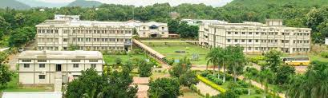
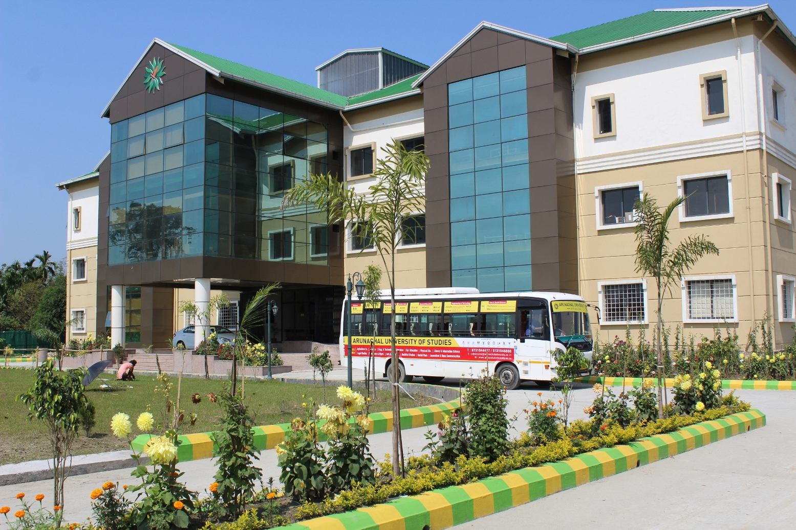
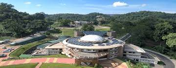
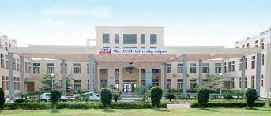

A college (Latin: collegium) is an educational institution or a constituent part of one. A college may be a degree-awarding tertiary educational institution, a part of a collegiate or federal university, an institution offering vocational education, or a secondary school. In most of the world, a college may be a high school or secondary school, a college of further education, a training institution that awards trade qualifications, a higher-education provider that does not have university status (often without its own degree-awarding powers), or a constituent part of a university. In the United States, a college may offer undergraduate programs – either as an independent institution or as the undergraduate program of a university – or it may be a residential college of a university or a community college, referring to (primarily public) higher education institutions that aim to provide affordable and accessible education
1.Centurion University of Technology and Management, Andhra Pradesh |
2.Arunachal University of Studies |
3.Assam Don Bosco University |
4.ICFAI University, Dehradun |
5.Techno India University |
1.Centurion University of Technology and Management, Andhra Pradesh
Centurion University of Technology and Management, Andhra Pradesh (CUTM AP) is a private university[2] located at Tekkali Village in Nellimarla mandal, Vizianagaram district, Andhra Pradesh, India. The university was established in 2017 by the Centurion School of Rural Enterprise Management Trust (CSREM Trust) through the Andhra Pradesh Private Universities (Establishment and Regulation) Act, 2016.[3] It offers various diploma, undergraduate and postgraduate courses, as well as a Ph.D program. The university started operation in July 2017 from a temporary campus near Anandapuram and have a permanent campus near Vizianagaram in the future.[4] It is a sister university of Centurion University of Technology and Management in Odisha.
2.Arunachal University of Studies
Arunachal University of Studies (AUS) is a state self-sponsored (top private university) established by Govt. of Arunachal Pradesh as a Multi-faculty Skill & Education University at Namsai, Arunachal Pradesh.
AUS is the extreme northeastern university of India and the first university to witness the sunrise in the country. The university is duly recognized by UGC u/s 2(f) and is empowered to award degrees specified u/s 22 of UGC Act 1956. AUS is a member of the Association of Indian Universities (AIU), New Delhi. The certifications issued by the university are globally accepted. AUS is the youngest university-level institution of India to be accredited by the National Assessment and Accreditation Council (NAAC).
3.Assam Don Bosco University
Assam Don Bosco University is a state private, non-profit, co-educational, Catholic research university located in Assam, India. The university was founded on March 29, 2008, by the Salesians of Don Bosco (SDB) and executed by the Don Bosco Society, Azara, Guwahati. The university was officially established through the Assam Don Bosco University Act, 2009, on 9 January 2009 and created under the Assam Private Universities Act 2007.[1][2][3][4]
The university which is located in Guwahati, Assam, India is Assam's first state university in the private sector. The Governor of Assam serves as the Visitor. It is ranked by NIRF as the best private university in North East India. ADBU has been awarded the accreditation rating of “A Grade” by NAAC.
4. ICFAI University, Dehradun
ICFAI University, Dehradun (IUD), or in its fuller name Institute of Chartered Financial Analysts of India University, Dehradun, is a private university located in the city of Dehradun, in north Indian state of Uttarakhand. It was established in 2003 and is organised into four institutes, which are as ICFAI Law School (ILS), ICFAI Business School (IBS), ICFAI Tech School (ITS), and ICFAI Education School (IEds).
5.Techno India University
Our student friendly campus, multicultural and cosmopolitan ambiences, top- class education with a human touch, brilliant academic and industry exposure has made Techno India University, West Bengal one of the most preferred educational destinations in modern times. Techno India University, West Bengal has been making every effort to make its academics and teaching-learning live up to international standards with its world-class infrastructure, excellent academic ambience and vibrant campus.
| PRIVATE UNIVERSITIES NAME |
|---|
| 1.Centurion University of Technology and Management | 2.Arunachal University of Studies |
| 3.Assam Don Bosco University |
| 4. ICFAI University, Dehradun |
| 5.Techno India University |
| 6.Andhra University Andhra Pradesh |
| 7.University of Madras Tamil Nadu |
| 8. University of Kerala Kerala |
| 9.University of Mysore Karnataka |
| 10.Osmania University Telangana |